Holzstaub und -späne sollten möglichst gleichmäßig über den Siloquerschnitt verteilt werden. Der Schüttkegel sollte möglichst zentrisch angeordnet sein.
Es werden drucklose und druckbehaftete Beschickungssysteme unterschieden. Beschickungssysteme können außerdem aus mechanischen Einrichtungen (z. B. Elevatoren) oder aus pneumatischen Einrichtungen (z. B. Pneumatische Förderanlagen) bestehen.
Anmerkung:
In den nachfolgenden schematischen Darstellungen sind die im Abschnitt 5 behandelten baulichen und sicherheitstechnisch notwendigen Details (z. B. Absturzsicherungen, Zugänge, Podeste, etc.) nicht erfasst.
Vorteile:
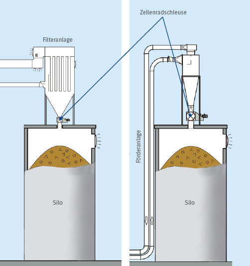
Abb. 6.1 und 6.2 Möglichkeiten zur drucklosen Befüllung
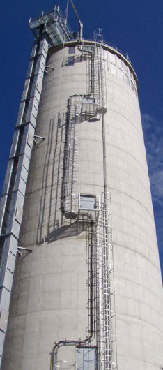
Abb. 6.3 Möglichkeiten zur drucklosen Befüllung
Beim Befüllen des Silos durch direktes Einblasen des Füllgutes kann ein relativ hoher Innendruck entstehen. Dies kann zu Beeinträchtigungen im Bereich der pneumatischen Fördereinrichtungen oder einer dem Silo nachgeschalteten Feuerungsanlage führen.
Bei der druckbehafteten Einbringung der Späne kann zwischen folgenden Konzepten gewählt werden:
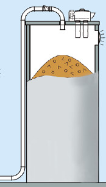
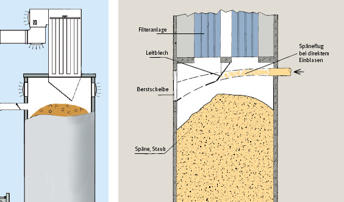
Nachteile:
Druckentlastungseinrichtungen, Füllstands-Anzeiger und Löscheinrichtungen dürfen – z. B. durch Späne-Flug aus den Einblasleitungen – in ihrer Wirkung nicht beeinträchtigt werden. Darum sollte der Späne-Flug in diesem Fall entsprechend gerichtet oder durch Bleche umgelenkt werden.
Anmerkung:
Beim direkten seitlichen Einblasen im Wandbereich, wie es vor allem bei älteren Anlagen üblich war und nach heutigen Erkenntnissen nicht mehr empfohlen werden kann, treten hohe Staubbelastungen beim Eintrag in das Silo auf. Außerdem gelangen Funken aus Bearbeitungsmaschinen, Ventilatoren etc. direkt in das Silo. Dadurch erhöht sich die Explosionsgefahr beträchtlich (siehe auch DGUV Information 209-045). Daher sind für diesen Fall folgende (Mindest-) Anforderungen zu stellen:
Die reguläre Austragung der Späne aus dem Silo darf grundsätzlich nur mit mechanischen Austrageinrichtungen erfolgen.
Die Austrageinrichtungen sollten grundsätzlich so gestaltet werden, dass der gesamte Siloquerschnitt erfasst wird. Damit können „tote“ Ecken vermieden werden, in denen sich „Widerlager“ für Späne-Brücken bilden können. Außerdem wird durch diese Ecken das nutzbare Silovolumen um bis zu 20 % verringert, weil sich das gelagerte Material nicht vollständig austragen lässt.
Der angestrebte Massenfluss der Späne und gleichmäßige Austrag wird bei dieser Vorgehensweise begünstigt.
Qualitätsmerkmale einer leistungsfähigen Austragung für Silos für Holzstaub und -späne:
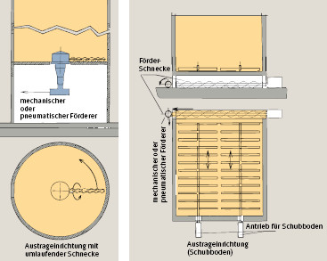
Abb. 6.7 und 6.8 Geeignete Austrageinrichtungen für verschiedene Silogrundrisse
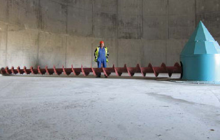
Abb. 6.9 Horizontale Austragsschnecke im Bodenbereich
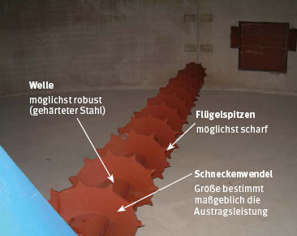
Abb. 6.10 Konstruktionsmerkmale einer Austragschnecke
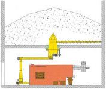 |
Abb. 6.11 Horizontalschnecken für alle Silogrößen und Materialzusammensetzungen geeignet |
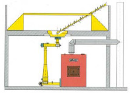 |
Abb. 6.12 Pendelschnecken *) Nur bei rieselfähigem, trockenem Material mit geringer Füllhöhe. Pendelschnecken stellen sich senkrecht und tragen seitlich nichts mehr aus (Gefahr der Schachtbildung). |
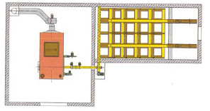 |
Abb.6.13 Schubbodenaustragung Für rechteckige Silos bis max. 12 m Höhe. Bei nassem Material sind bis max. 5 m Füllhöhe keine Probleme zu erwarten. |
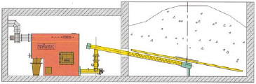 |
Abb. 6.14 Raumaustragung **) Empfehlenswert nur für Vorratsbehälter und Silos bis max. 3 m x 3 m Querschnitt und max. 3 m Füllhöhe. Nur für trockenes Material geeignet. |
| Anmerkungen: *) Pendelschnecken sind als Austragung generell nicht empfehlenswert, da sie erfahrungsgemäß störanfällig sind und Einbauten im Siloinneren erfordern. Wenn sie trotzdem eingesetzt werden sollen, dann nur unter folgenden Randbedingungen: |
|
|
|
| **) Raumaustragungen sind als Austragungen für Silos generell ungeeignet. Sie können nur im Bereich von sogenannten „ Spänekellern“ (die immer eine problematische Lösung darstellen) und in Vorratsbehältern eingesetzt werden. Ein zweiter Austragstutzen ist bei Raumaustragungen nicht sinnvoll, da die Austragleistung für eine Notentleerung zu gering ist. Bei Raumaustragungen müssen daher grundsätzlich zusätzliche Not-Austrag-Systeme installiert werden können. | |
Anforderungen an die Zugangssicherung für den Spänelagerbereich bei der Austragung mit mechanischen Austrageinrichtungen:
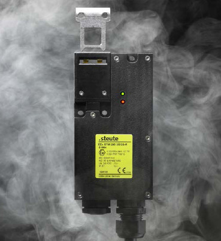
Abb. 6.15 Sicherheitsschalter als Zuhaltung für Verwendung im Ex-Bereich (Zone 21)
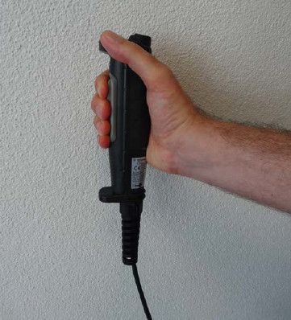
Abb. 6.16 Zustimmungs-Schalter für den Einricht-Betrieb mit 3 Stellungen (Aus-Ein-Aus) und zusätzlichem Start/Stopp-Schalter
Es sollte grundsätzlich ein konstanter Massenfluss im Silo stattfinden, um das Material in Bewegung zu halten und damit Fließstörungen zu vermeiden. Wegen dieses Materialdurchlaufes sind Puffersilos im Hinblick auf Fließstörungen weniger anfällig als Speichersilos. Auch bei Speichersilos muss die Austrageinrichtung in regelmäßigen Zeitabstanden kurzzeitig in Betrieb genommen werden, um das Festsitzen der Einrichtung zu verhindern.
Wenn durch die aktuell vorgesehene Betriebsweise kein ständiger Materialaustrag erfolgt, kann dieser durch ständiges Umwälzen des Lagergutes erreicht werden, z. B. durch Entnahme über eine zweite Entnahmestelle (Notentnahmestutzen) und Wiederzuführung des entnommenen Materials über eine Einschleusung in pneumatische und mechanische Förderer. Dabei ist Folgendes zu beachten:
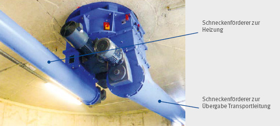
Abb. 6.17 Austragung mit 2 getrennten Übergabestellen
Anzeige- bzw. Überwachungseinrichtungen sind eine Sicherheitsmaßnahme gegen Überfüllung. Für pneumatisch befüllte Silos werden in DIN EN 617 automatisch wirkende Sicherheitsmaßnahmen gegen Überfüllung gefordert.
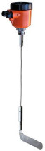
Abb. 6.18 Drehflügel-Füllstandswächter
Füllstandsanzeiger (wie Radar-, Ultraschall-, Infrarotmesser, elektromechanische Lotsysteme, etc.) geben dagegen eine quantitative Information über den tatsächlichen Füllstand. Dabei findet keine Beeinträchtigung des Schüttgut-Fließverhaltens statt. Ultraschall- und Infrarotmesser liefern jedoch aufgrund der amorphen Struktur von Holzspäne-Schüttungen, anders als bei körnigen Schüttgütern, nur ungenaue Ergebnisse.
Bei der Auswahl des Füllstandsensors ist darauf zu achten, dass der innerhalb des Späne-Lageraumes befindliche Teil keine für Holzstaub wirksame Zündquelle darstellt, da dieser Bereich üblicherweise in Zone 20 bzw. Zone 21 einzuordnen ist.
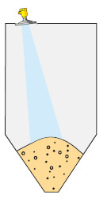
Abb. 6.19 Radarsensor im eingebauten Zustand
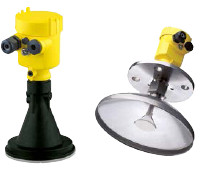
Abb. 6.20 Radarsensor im nicht eingebauten Zustand
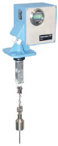
Abb. 6.21 Silopilot (Elektromechanisches Lotsystem)
Weitere Überwachungseinrichtungen sind erforderlich, wenn Schüttgüter zu Gärprozessen und/oder Selbstentzündung neigen. Dies ist z. B. bei der Lagerung von feuchten Sägespänen, Wald-Hackschnitzeln usw. oder in Silos mit großen Schüttmengen der Fall.
Bei erhöhter Selbstentzündungsgefahr sollte in jedem Fall auch die Schüttgut-Temperatur überwacht werden. Dazu müssen mehrere Messstellen über das gesamte Silo verteilt (z. B. Decke, Boden, Wände) angeordnet werden. Mit speziellen Mess-Gehängen, die in den Späne-Lagerraum und das Schüttgut hineinreichen, kann eine weitgehend lückenlose Überwachung erzielt werden.
Um die Brandgefahr zu minimieren, muss bei Überschreitung einer kritischen Temperatur das Schüttgut möglichst schnell ausgetragen, gekühlt oder umgelagert werden.
Hinweis:
Silos zur Lagerung von sogenannten feuchten Waldhackschnitzeln (Grünschnitzel) sind in der Schweiz im Suva-Merkblatt 66050 (www.suva.ch/waswo) behandelt.
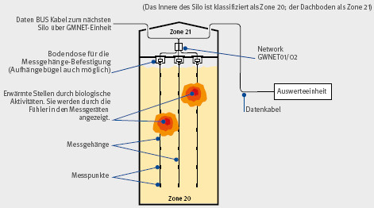
Abb. 6.22 Messtechnische Einrichtung zur Temperaturüberwachung
Automatische Späne-Feuerungsanlagen stehen über eine mechanische Siloaustragung in Verbindung mit Absauganlagen. Diese Späne-Feuerungsanlagen reagieren empfindlich auf Druckunterschiede zwischen Brennkammer und Siloinnerem. Besteht im Silo Überdruck gegenüber der Brennkammer, so kann der Luftvolumenstrom in Richtung Brennkammer das Brennstoff-Luft-Gemisch so beeinflussen, dass der Anlagen- Wirkungsgrad sinkt und der Schadstoffausstoß zunimmt. Im Extremfall kann die Feuerung auch gelöscht werden.
Besteht Unterdruck im Silo gegenüber der Brennkammer, kann es zu Rückbränden in das Silo oder zum Eintrag von Rauchgasen in den Späne-Lagerraum kommen.
Um Rückbrände in das Silo und in der Folge Explosionen zu vermeiden, sind folgende technische Maßnahmen erforderlich:
Detailliertere Anforderungen an die Beschickungseinrichtungen von Holzspäne- und Holzstaub-Feuerungen können Anhang 8 entnommen werden.
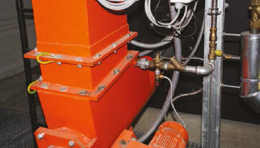
Abb. 6.23 Fallschacht von einer Siloaustragung zur Stoker-Schnecke
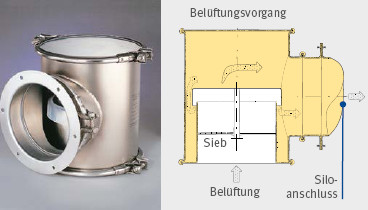
Abb. 6.24 und 6.25 Belüftungsventil